PRESS KIT


夜市地下城 媒體資料
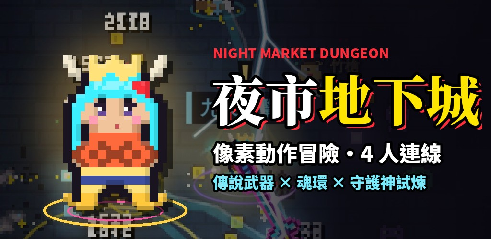
夜市打烊後，攤位底下的地下城醒了過來。《夜市地下城》是以台灣夜市為主題的像素動作冒險遊戲，拿起鍋鏟、雨傘、手機往下一層一層打，收集傳說武器、經營自己的夜市莊園，也可以在 3D 烤香腸攤顧攤，最多 4 人連線一起玩。手機、電腦打開瀏覽器就能玩，不用下載；也有 iPhone（App Store）和 Android（Google Play）版。
基本資料
- 遊戲名稱
- 夜市地下城（Night Market Dungeon）
- 開發／營運
- 玖悠谷國際企業社（台灣）
- 類型
- 像素動作冒險、Roguelite
- 平台
- 網頁瀏覽器（手機、電腦）、Android、iPhone
- 人數
- 單人，或最多 4 人連線合作
- 語言
- 繁體中文、英文
- 價格
- 免費遊玩；可選購造型類道具，沒有轉蛋、抽獎或機率商品，等級和經驗不能買
- 分級
- 輔導十五歲級（卡通像素打鬥，流血效果可以關掉）
- 更新
- 每週更新
- 聯絡
- kunoya.store@gmail.com
遊戲特色
- 爽快的像素動作：近戰、遠程、三段蓄力投擲；看準時機格擋，把子彈打回去；牆壁打得碎。
- 傳說武器與專屬必殺：每一把傳說武器都有自己的技能，還有奧義「金龍巡夜」。
- 豐富的關卡：故事模式、冒險模式 50 層＋無盡深淵、守護神的試煉、每日挑戰。
- 3D 夜市烤香腸攤（新）：翻面、搧火、刷醬，熟識的居民會來光顧、找你聊天；也能 2～4 人一起顧攤。
- 最多 4 人連線：房號找朋友或隨機配對，聊天有安全過濾。
- 夜市莊園與寵物：經營自己的莊園、養寵物、跟居民交朋友。
- 公平付費：強化、升星 100% 成功，不靠運氣；付費內容只有造型和寵物。
截圖
點圖片看原尺寸（橫式 1600 px、直式 1080×1920）。


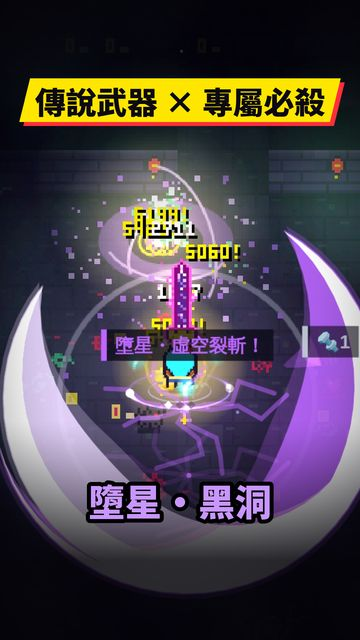
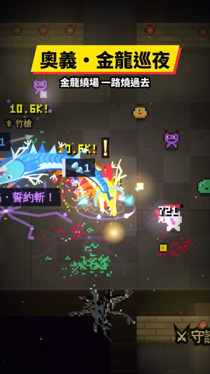
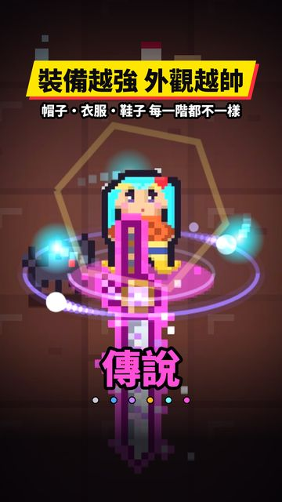
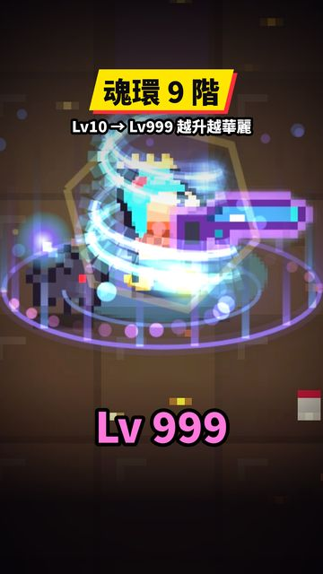
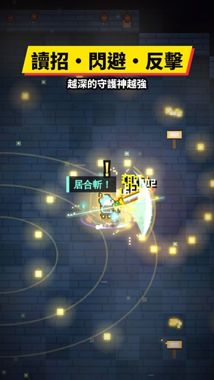
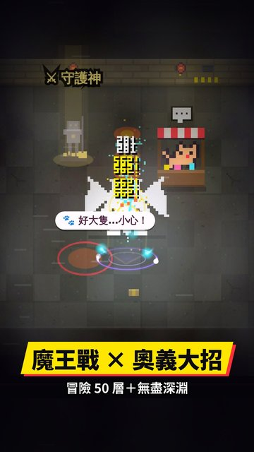
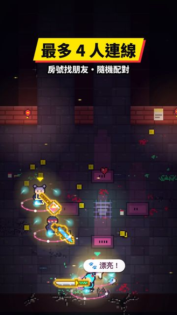
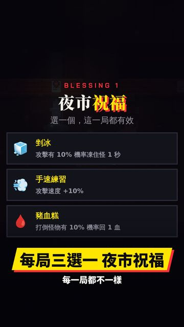
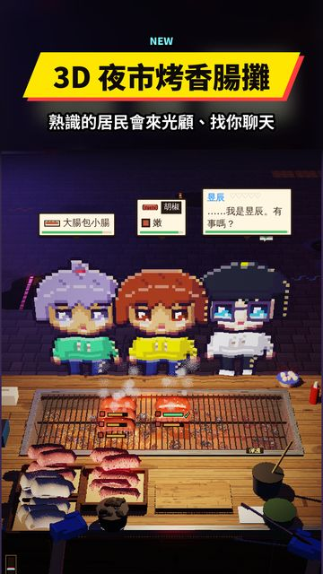
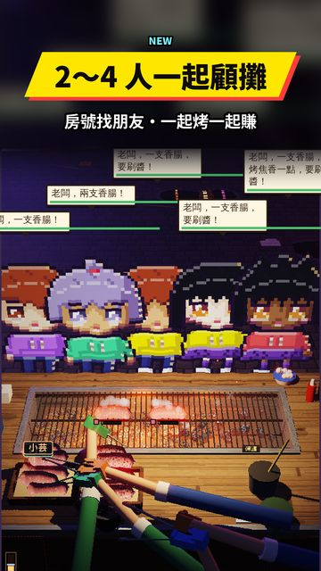
標誌
App 圖示（512×512 PNG）：下載
使用說明
媒體報導、評測、實況與影片都可以直接使用本頁的截圖、主視覺和圖示，影片可以營利，不用另外申請。請不要修改標誌，也不要拿來暗示有合作或代言。
本遊戲包含 AI 生成素材；夜貓老闆和居民的對話由 AI 產生，僅供娛樂。